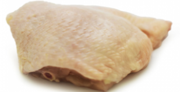
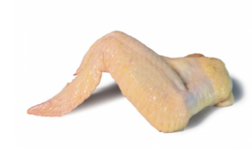

Pollo entero (sin víscera)
La carne de pollo es rica en vitaminas y minerales. Por ejemplo, un pollo entero crudo tiene 200 mg. de fósforo, importante para la salud de nuestro huesos.

Contramuslo
Cada corte de pollo, como el contramuslo, es rica en vitaminas de los grupos A y B, que favorecen el metabolismo y el desarrollo muscular.

Alas (sin costillar)
Las alas se caracterizan por su jugosidad y alto contenido de colágeno. Son ideales para proteger los huesos, piel y dientes.